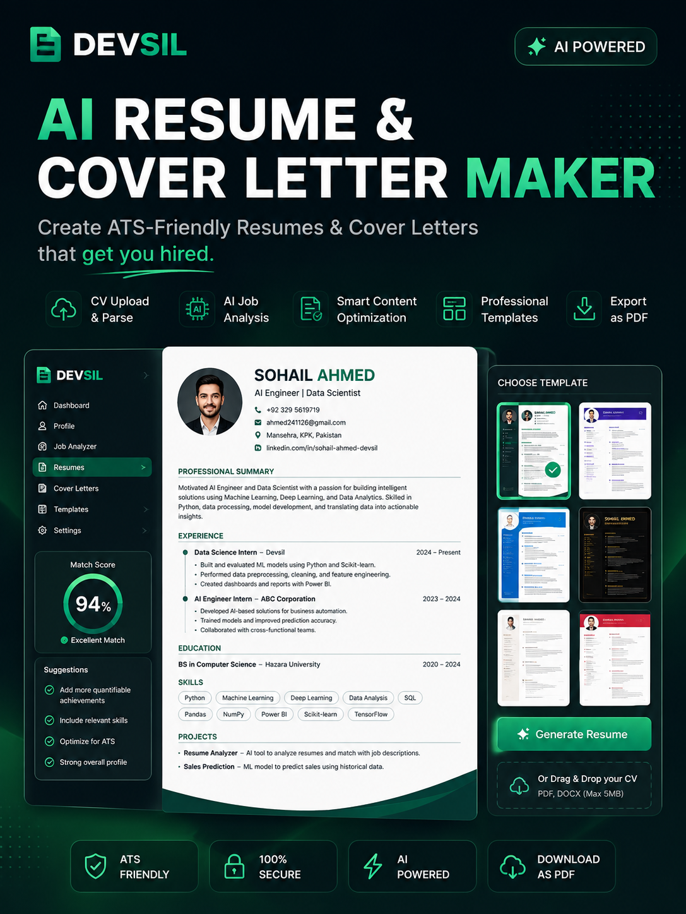
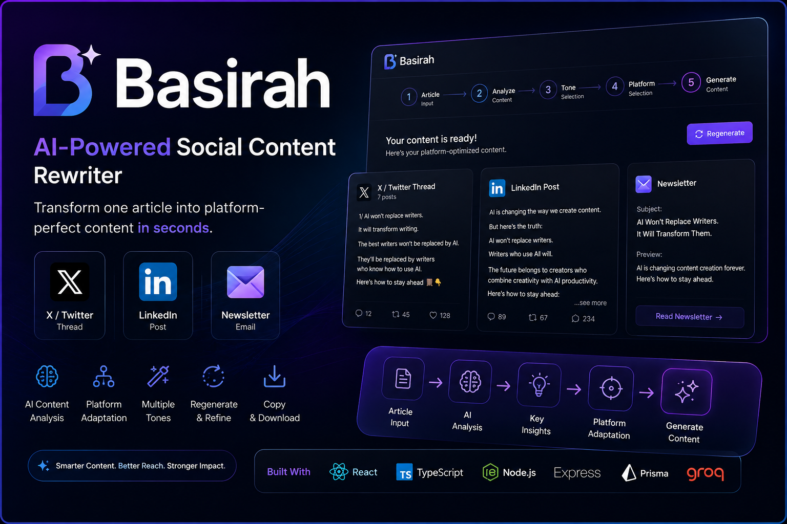

Smart Attendance System
Automated attendance tracking system using face recognition and computer vision — eliminating manual attendance processes in educational or corporate settings.

Pothole Detection App
Real-time pothole detection system using YOLOv8 deep learning and computer vision to identify road hazards — supporting infrastructure maintenance through automated visual inspection.

ASL Recognition Project
American Sign Language (ASL) hand gesture recognition system using Convolutional Neural Networks — enabling accessibility for the hearing-impaired through AI-powered sign detection.

Documents Scanner
Intelligent document scanning application using OpenCV for edge detection, perspective transformation, and image enhancement — producing clean, digitized document outputs.

Sales Data Analysis
In-depth exploratory data analysis and insight generation for retail sales datasets — uncovering trends, seasonality, and revenue drivers to support business decision-making.

Customer Churn Analysis
Predicting customer retention and identifying key churn risk factors using robust machine learning classification models — helping businesses proactively retain at-risk customers.

Employee Attrition Analysis
Analyzing workforce data to understand and predict employee turnover rates — identifying key drivers of attrition to inform HR strategy and retention programs.

Hospital Emergency Room Analysis
Analyzing hospital emergency room traffic patterns to optimize staffing schedules and reduce patient wait times — delivering actionable insights for healthcare administration.

Heart Disease Prediction
Diagnostic classification model predicting the likelihood of heart disease based on clinical parameters — supporting early detection and preventative healthcare decisions.

Social Media Engagement Prediction
Predictive modeling of social media engagement metrics — forecasting likes, shares, and reach to optimize content strategy for creators and brands.

Healthcare Cost Prediction & Segmentation
Patient segmentation and healthcare cost forecasting models — helping insurance companies optimize resource allocation and pricing strategies through data-driven insights.

Unsupervised ML & Deep Learning
Exploration of clustering algorithms combined with deep neural networks for complex, unlabeled pattern discovery — applied to real-world datasets for unsupervised learning insights.

Deep Learning: CNN (Vision) & LSTM (NLP)
Advanced deep learning project implementing CNNs for image classification and LSTMs for natural language processing — demonstrating expertise in both Computer Vision and NLP architectures.

Time Series Forecasting & Transfer Learning
Applying transfer learning techniques to sequential time-series data — achieving accurate future predictions for temporal patterns in financial and operational datasets.

Full Stack AI Application
End-to-end AI application development demonstrating full-stack integration: ML models served through FastAPI and Flask backends, with an interactive Streamlit frontend — a complete production-ready AI system.
AI Ads Maker
AI-powered application designed to automate and generate creative marketing advertisements, enhancing content creation speed and efficiency.

Job Analyzer
An intelligent Generative AI tool to analyze job descriptions and match them with resumes, providing similarity scores and keyword extraction.

Social Media Content Rewriter
A smart tool leveraging advanced language models to repurpose, optimize, and rewrite text for various social media platforms to maximize engagement.